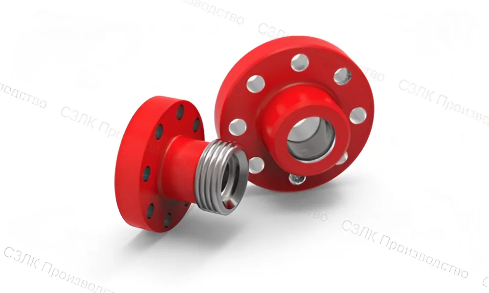
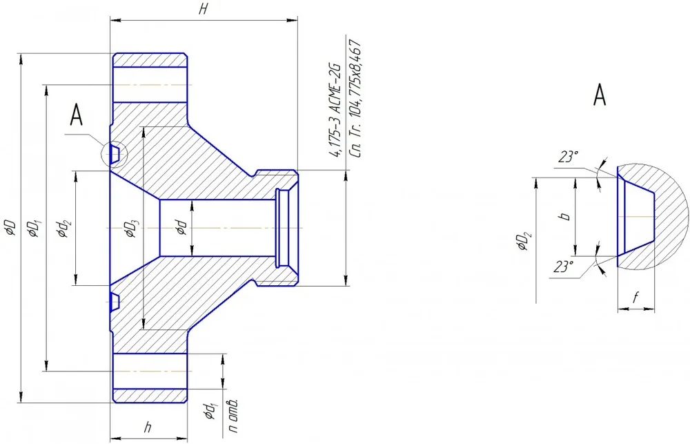
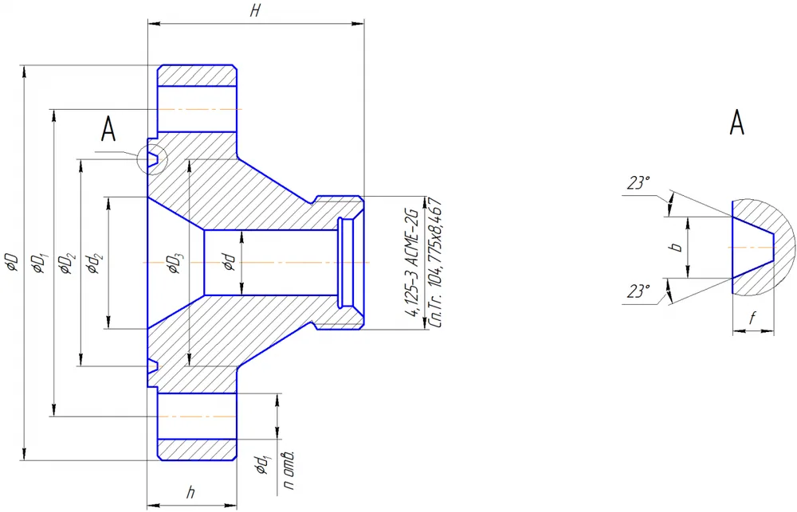
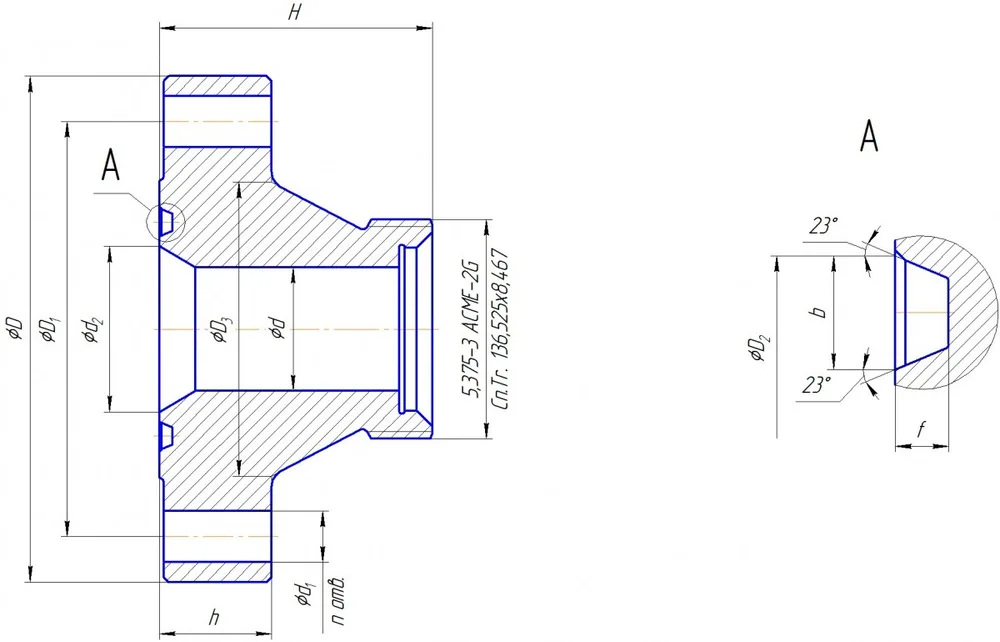
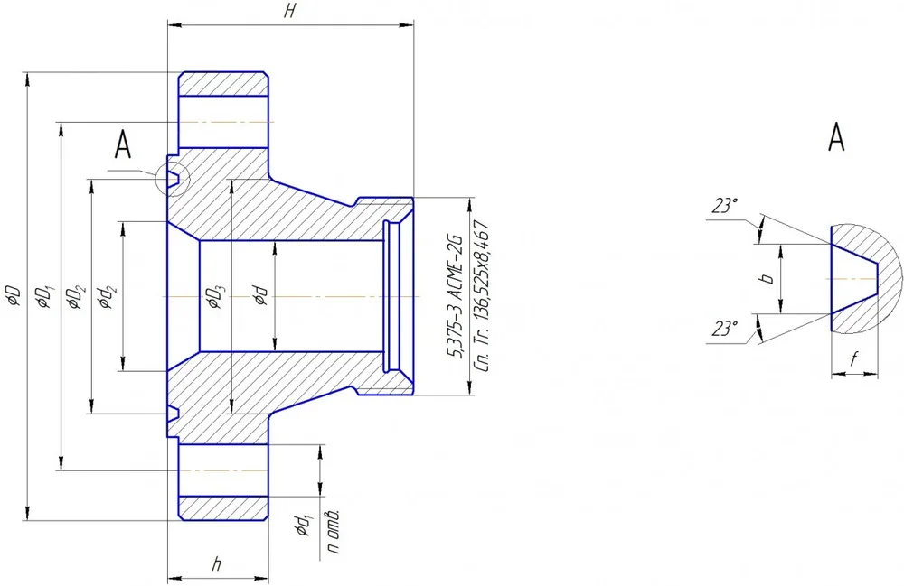
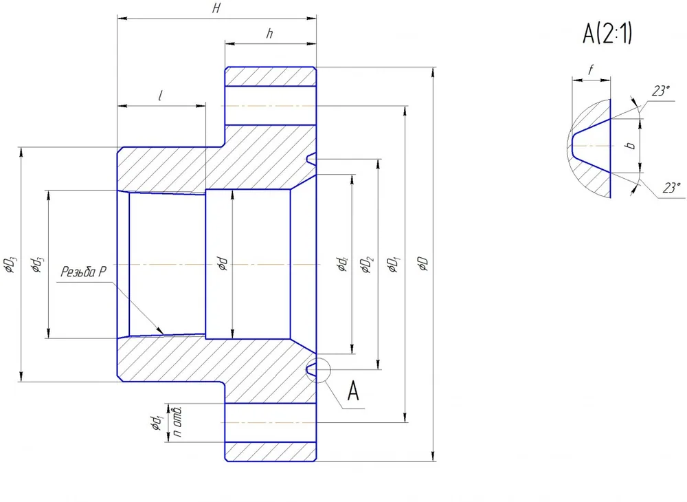

Соединительная и запорная арматура
Фланцевые соединения устьевого оборудования
Фланцы и соединительные элементы для устьевого оборудования скважин, включая фланцевые адаптеры, заглушки и переходники. Изготавливаются из легированной стали с термической обработкой. Все изделия соответствуют ГОСТ 28919-91.
Типы фланцевых соединений
Фланец воротниковый - ГОСТ 28919-91 2" Fig.1502 Исполнение 2 тип 2
| Обозначение фланца | Номинальный диаметр DN (мм) | Диаметр проходного отверстия d, не более (мм) | Наружный диаметр D (мм) | Диаметр делительной окружности центров отверстий под шпильки D1 (мм) | Наружный диаметр канавки под прокладку D2 (мм) | Большой диаметр шейки D3 (мм) | Диаметр отверстий под шпильки d1 (мм) | Количество отверстий под шпильки n (шт) | Высота фланца H (мм) | Полная высота тарелки h (мм) | Ширина канавки b (мм) | Глубина канавки f (мм) | Диаметр переходной фаски d2 (мм) | Обозначение прокладки |
|---|---|---|---|---|---|---|---|---|---|---|---|---|---|---|
| Рр 70 МПа (10000 PSI) | ||||||||||||||
| Фланец 50х70 | 50 | 51 | 200 | 158,5 | 86,2 | 100 | 23 | 8 | 150 | 44 | 12,6 | 6,0 | - | БХ152 |
| Фланец 65х70 | 65 | 51 | 230 | 184,0 | 102,8 | 121 | 25 | 8 | 170 | 51 | 14,1 | 6,8 | 65 | БХ153 |
| Фланец 80х70 | 80 | 51 | 270 | 216,0 | 119 | 142 | 28 | 8 | 170 | 58 | 15,4 | 7,5 | 78 | БХ154 |
| Фланец 100х70 | 100 | 51 | 315 | 258,5 | 150,6 | 183 | 32 | 8 | 200 | 70 | 17,7 | 8,3 | 103 | БХ155 |
| Фланец 180х70 | 180 | 51 | 480 | 403,0 | 241,8 | 302 | 42 | 12 | 250 | 103 | 23,4 | 11,1 | 180 | БХ156 |
| Рр 105 МПа (15000 PSI) | ||||||||||||||
| Фланец 50х105 | 50 | 51 | 222 | 174,5 | 86,2 | 111 | 25 | 8 | 170 | 51 | 12,6 | 6,0 | - | БХ152 |
| Фланец 65х105 | 65 | 51 | 255 | 200,0 | 102,8 | 129 | 28 | 8 | 200 | 57 | 14,1 | 6,7 | 65 | БХ153 |
| Фланец 80х105 | 80 | 51 | 288 | 230,0 | 119,0 | 127 | 32 | 8 | 170 | 65 | 15,4 | 7,5 | 77 | БХ154 |
| Фланец 100х105 | 100 | 51 | 360 | 290,5 | 150,6 | 195 | 39 | 8 | 200 | 75 | 17,7 | 8,3 | 103 | БХ155 |
Фланец воротниковый - ГОСТ 28919-91 2" Fig.1502 Исполнение 1 тип 2
| Обозначение фланца | Номинальный диаметр DN (мм) | Диаметр проходного отверстия d, не более (мм) | Наружный диаметр D (мм) | Диаметр делительной окружности центров отверстий под шпильки D1 (мм) | Средний диаметр канавки под прокладку D2 (мм) | Большой диаметр шейки D3 (мм) | Диаметр отверстий под шпильки d1 (мм) | Количество отверстий под шпильки n (шт) | Высота фланца H (мм) | Полная высота тарелки h (мм) | Ширина канавки b (мм) | Глубина канавки f (мм) | Диаметр переходной фаски d2 (мм) | Обозначение прокладки | |||||||||||||||
|---|---|---|---|---|---|---|---|---|---|---|---|---|---|---|---|---|---|---|---|---|---|---|---|---|---|---|---|---|---|
| Рр 35 МПа (5000 PSI) | |||||||||||||||||||||||||||||
| Фланец 50х35 | 50 | 51 | 215 | 165,0 | 95,2 | 105 | 25 | 8 | 150 | 46 | 12,0 | 8,0 | - | П24 | |||||||||||||||
| Фланец 65х35 | 65 | 51 | 245 | 190,5 | 107,9 | 124 | 28 | 8 | 150 | 50 | 12,0 | 8,0 | 65 | П27 | |||||||||||||||
| Фланец 80х35 | 80 | 51 | 265 | 203 | 136,5 | 134 | 32 | 8 | 200 | 56 | 12,0 | 8,0 | 80 | П35 | |||||||||||||||
| Фланец 100х35 | 100 | 51 | 310 | 241 | 161,9 | 162 | 36 | 8 | 200 | 62 | 12,0 | 8,0 | 103 | П39 | |||||||||||||||
| Фланец 180х35 | 180 | 51 | 395 | 317,5 | 211,1 | 229 | 39 | 12 | 250 | 92 | 13,5 | 9,5 | 180 | П46 | |||||||||||||||
| Фланец 230х35 | 230 | 51 | 482 | 394 | 269,9 | 292 | 45 | 12 | 250 | 103 | 16,7 | 11 | 230 | П50 | |||||||||||||||
| Рр 21 МПа (3000 PSI) | |||||||||||||||||||||||||||||
| Фланец 50х21 | 50 | 51 | 215 | 165,0 | 95,2 | 105 | 25 | 8 | 150 | 46 | 12,0 | 8,0 | - | П24 | |||||||||||||||
| Фланец 65х21 | 65 | 51 | 245 | 190,5 | 107,9 | 124 | 28 | 8 | 150 | 50 | 12,0 | 8,0 | 65 | П27 | Фланец 80х21 | 80 | 51 | 242 | 190,5 | 123,8 | 127 | 25 | 8 | 170 | 46 | 12,0 | 8,0 | 80 | П31 |
| Фланец 100х21 | 100 | 51 | 292 | 235 | 149,2 | 159 | 32 | 8 | 200 | 53 | 12,0 | 8,0 | 103 | П37 | |||||||||||||||
| Фланец 180х21 | 180 | 51 | 380 | 317,5 | 211,1 | 235 | 32 | 12 | 250 | 64 | 12,0 | 8,0 | 180 | П45 | |||||||||||||||
| Фланец 230х21 | 230 | 51 | 470 | 394 | 269,9 | 299 | 39 | 12 | 250 | 72 | 12,0 | 8,0 | 230 | П49 |
Фланец воротниковый - ГОСТ 28919-91 3" Fig.1502 Исполнение 2 тип 1
| Обозначение фланца | Номинальный диаметр DN (мм) | Диаметр проходного отверстия d, не более (мм) | Наружный диаметр D (мм) | Диаметр делительной окружности центров отверстий под шпильки D1 (мм) | Наружный диаметр канавки под прокладку D2 (мм) | Большой диаметр шейки D3 (мм) | Диаметр отверстий под шпильки d1 (мм) | Количество отверстий под шпильки n (шт) | Высота фланца H (мм) | Полная высота тарелки h (мм) | Ширина канавки b (мм) | Глубина канавки f (мм) | Диаметр переходной фаски d2 (мм) | Обозначение прокладки |
|---|---|---|---|---|---|---|---|---|---|---|---|---|---|---|
| Рр 70 МПа (10000 PSI) | ||||||||||||||
| Фланец 50х70 | 50 | 52 | 200 | 158,5 | 86,2 | 100 | 23 | 8 | 150 | 44 | 12,6 | 6,0 | - | БХ152 |
| Фланец 65х70 | 65 | 65 | 230 | 184,0 | 102,8 | 121 | 25 | 8 | 170 | 51 | 14,1 | 6,8 | - | БХ153 |
| Фланец 80х70 | 80 | 77 | 270 | 216,0 | 119 | 142 | 28 | 8 | 170 | 58 | 15,4 | 7,5 | - | БХ154 |
| Фланец 100х70 | 100 | 77 | 315 | 258,5 | 150,6 | 183 | 32 | 8 | 200 | 70 | 17,7 | 8,3 | 103 | БХ155 |
| Фланец 180х70 | 180 | 77 | 480 | 403,0 | 241,8 | 302 | 42 | 12 | 250 | 103 | 23,4 | 11,1 | 180 | БХ156 |
| Рр 105 МПа (15000 PSI) | ||||||||||||||
| Фланец 50х105 | 50 | 52 | 222 | 174,5 | 86,2 | 111 | 25 | 8 | 170 | 51 | 12,6 | 6,0 | - | БХ152 |
| Фланец 65х105 | 65 | 65 | 255 | 200,0 | 102,8 | 129 | 28 | 8 | 200 | 57 | 14,1 | 6,7 | - | БХ153 |
| Фланец 80х105 | 80 | 77 | 288 | 230,0 | 119,0 | 127 | 32 | 8 | 170 | 65 | 15,4 | 7,5 | - | БХ154 |
| Фланец 100х105 | 100 | 77 | 360 | 290,5 | 150,6 | 195 | 39 | 8 | 200 | 75 | 17,7 | 8,3 | 103 | БХ155 |
Фланец воротниковый - ГОСТ 28919-91 3" Fig.1502 Исполнение 1 тип 1
| Обозначение фланца | Номинальный диаметр DN (мм) | Диаметр проходного отверстия d, не более (мм) | Наружный диаметр D (мм) | Диаметр делительной окружности центров отверстий под шпильки D1 (мм) | Средний диаметр канавки под прокладку D2 (мм) | Большой диаметр шейки D3 (мм) | Диаметр отверстий под шпильки d1 (мм) | Количество отверстий под шпильки n (шт) | Высота фланца H (мм) | Полная высота тарелки h (мм) | Ширина канавки b (мм) | Глубина канавки f (мм) | Диаметр переходной фаски d2 (мм) | Обозначение прокладки |
|---|---|---|---|---|---|---|---|---|---|---|---|---|---|---|
| Рр 35 МПа (5000 PSI) | ||||||||||||||
| Фланец 50х35 | 50 | 52 | 215 | 165,0 | 95,2 | 105 | 25 | 8 | 150 | 46 | 12,0 | 8,0 | - | П24 |
| Фланец 65х35 | 65 | 65 | 245 | 190,5 | 107,9 | 124 | 28 | 8 | 150 | 50 | 12,0 | 8,0 | - | П27 |
| Фланец 80х35 | 80 | 77 | 265 | 203 | 136,5 | 134 | 32 | 8 | 200 | 56 | 12,0 | 8,0 | - | П35 |
| Фланец 100х35 | 100 | 77 | 310 | 241 | 161,9 | 162 | 36 | 8 | 200 | 62 | 12,0 | 8,0 | 103 | П39 |
| Фланец 180х35 | 180 | 77 | 395 | 317,5 | 211,1 | 229 | 39 | 12 | 250 | 92 | 13,5 | 9,5 | 180 | П46 |
| Фланец 230х35 | 230 | 77 | 482 | 394 | 269,9 | 292 | 45 | 12 | 250 | 103 | 16,7 | 11,0 | 230 | П50 |
| Рр 21 МПа (3000 PSI) | ||||||||||||||
| Фланец 50х21 | 50 | 52 | 215 | 165,0 | 95,2 | 105 | 25 | 8 | 150 | 46 | 12,0 | 8,0 | - | П24 |
| Фланец 65х21 | 65 | 65 | 245 | 190,5 | 107,9 | 124 | 28 | 8 | 150 | 50 | 12,0 | 8,0 | - | П27 |
| Фланец 80х21 | 80 | 77 | 242 | 190,5 | 123,8 | 127 | 25 | 8 | 170 | 46 | 12,0 | 8,0 | - | П31 |
| Фланец 100х21 | 100 | 77 | 292 | 235 | 149,2 | 159 | 32 | 8 | 200 | 53 | 12,0 | 8,0 | 103 | П37 |
| Фланец 180х21 | 180 | 77 | 380 | 317,5 | 211,1 | 235 | 32 | 12 | 250 | 64 | 12,0 | 8,0 | 180 | П45 |
| Фланец 230х21 | 230 | 77 | 470 | 394 | 269,9 | 299 | 39 | 12 | 250 | 72 | 12,0 | 8,0 | 230 | П49 |
Фланцы пьедестальные
| Обозначение фланца | Условный диаметр трубы DN (мм) | Диаметр проходного отверстия d (мм) | Наружный диаметр D (мм) | Диаметр делительной окружности центров отверстий под шпильки D1 (мм) | Наружный диаметр канавки под прокладку D2 (мм) | Большой диаметр шейки D3 (мм) | Диаметр отверстий под шпильки d1 (мм) | Количество отверстий под шпильки n (шт) | Высота фланца H (мм) | Полная высота тарелки h (мм) | Ширина канавки b (мм) | Глубина канавки f (мм) | Диаметр переходной фаски d2 (мм) | Обозначение прокладки | Длина резьбы с полным профилем lmin (мм) | Диаметр фаски в плоскости торца d3 (мм) | Обозначение резьбы Р |
|---|---|---|---|---|---|---|---|---|---|---|---|---|---|---|---|---|---|
| Рр 35 МПа (5000 PSI) | |||||||||||||||||
| ФП-001 | 146 | 150 | 395 | 158,5 | 317,5 | 235 | 39 | 12 | 200 | 92 | 13,5 | 9,5 | 180 | П46 | 82 | 148,3 | 146 ОТТМ |
| ФП-002 | 168 | 170 | 395 | 184,0 | 317,5 | 235 | 39 | 12 | 200 | 92 | 13,5 | 9,5 | 180 | П46 | 86 | 170,5 | 168 ОТТМ |
| ФП-002 | 168 | 170 | 395 | 184,0 | 317,5 | 235 | 39 | 12 | 200 | 92 | 13,5 | 9,5 | 180 | П46 | 86 | 170,5 | 168 ОТТМ |
| ФП-230 Т | 273 | 230 | 482 | 394 | 269,9 | 308,5 | 45 | 12 | 200 | 103 | 16,7 | 11 | - | П50 | 120 | 275,4 | 273 ГОСТ 632-80 |
| ФП-230 ОТТМ | 245 | 230 | 482 | 394 | 269,9 | 294 | 45 | 12 | 200 | 103 | 16,7 | 11 | - | П50 | 120 | 246,7 | 245 ОТТМ |
Схематическое изображение фланцев

Фланец воротниковый 2" Fig.1502 Исполнение 2 тип 2

Фланец воротниковый 2" Fig.1502 Исполнение 1 тип 2

Фланец воротниковый 3" Fig.1502 Исполнение 2 тип 1

Фланец воротниковый 3" Fig.1502 Исполнение 1 тип 1

Фланец пьедестальный
* Нажмите на схему для увеличения
Не нашли нужную позицию?
Напишите нам — подберём аналог и согласуем характеристики.